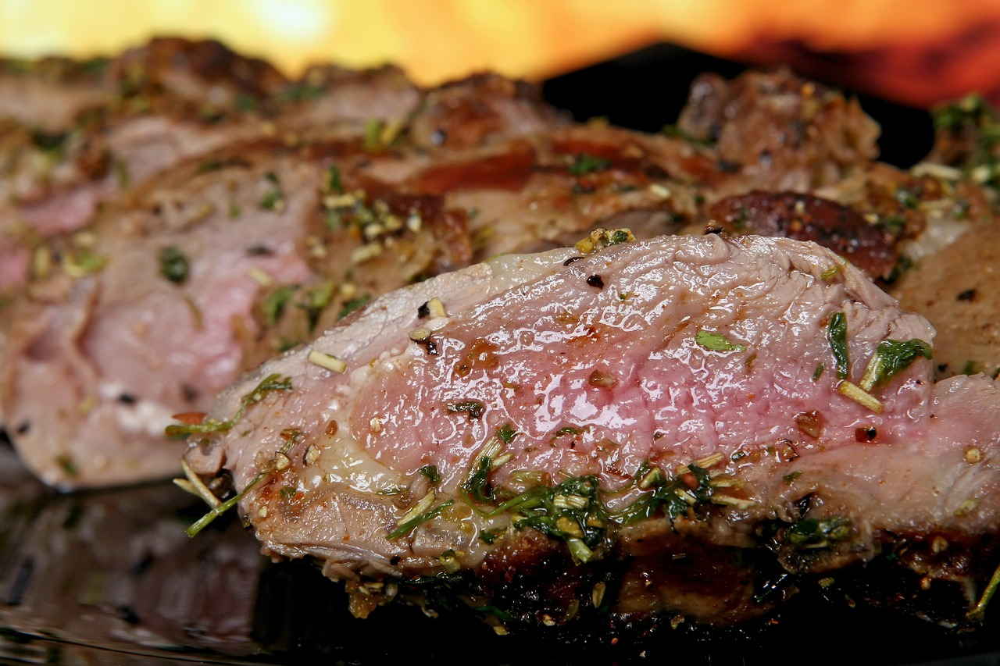

Not now Madam Venison, Cabbage, and Chestnut

Venison steaks.
Description
Ingredients (serves 2 simpletons):
- 1 Savoy cabbage
- Nutmeg
- 1 tbsp olive oil
- salt and pepper to taste
- 2 x 125g/4oz lean venison steaks
- 125g/4oz vacuum-packed chestnuts, roughly diced
- One slug of red wine
Steps
- Remove the outer leaves and core of the cabbage and slice thinly.
- Place in a saucepan with 1cm of water and a good pinch of grated nutmeg.
- Boil/steam for 4-5 minutes.
- Heat the oil in a frying pan.
- Season the steaks and fry with the chestnuts for 2-3 minutes each side (or in accordance to your preference of done-ness).
- Drain the cabbage and add to the frying pan with a slug of red wine.
- Cook off the wine and serve.